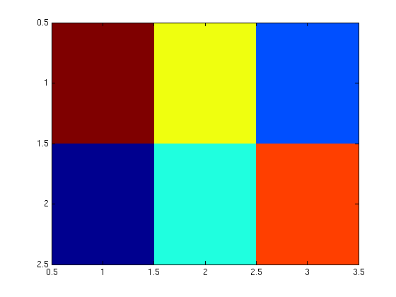

MATLAB: More with Vectors, Matrices, and Arrays
MATLAB is a vectorized language. That means it operates automatically over each member of an array without the need for an explicit loop (which would be necessary in C or FORTRAN). In fact, it is not only more compact, but more efficient and faster to avoid loops if possible.
Contents
Basic Operations
For Example,
A = [1 2 3; 4 5 6]; B = [1 4 9; 16 25 36];
Try
A + B
ans =
2 6 12
20 30 42
and
A - B
ans =
0 -2 -6
-12 -20 -30
Also, try
sqrt(B)
ans =
1 2 3
4 5 6
This uses the square root operator over each element of the array.
Dot Operators
MATLAB uses the dot-operator construction to distinguish between scalar-vectorized operations and matrix operations. Dot-operators are meant to repeat operations on the members of the array, for example,
A .* A
ans =
1 4 9
16 25 36
This differs from A * A, which would fail in this case, since the matrix multiplication is only mathematically defined for arrays with the same number of rows and columns.
Other common dot operators are:
B.^0.5
ans =
1 2 3
4 5 6
which applies the "raise to the 0.5 power" operation to each member of the array B.
A ./ B
ans =
1.0000 0.5000 0.3333
0.2500 0.2000 0.1667
which allows us to divide elements in A by the corresponding elements in B.
Vectorized Functions
Most (if not all) MATLAB functions are vectorized. For example:
log(A)
ans =
0 0.6931 1.0986
1.3863 1.6094 1.7918
sin(A)
ans =
0.8415 0.9093 0.1411
-0.7568 -0.9589 -0.2794
Note that, by default, in arrays of two or more dimensions, all operators do the calculations along the first non-singleton dimension. For example,
A = [6, 4, 2; 1, 3, 5]
A =
6 4 2
1 3 5
max(A)
ans =
6 4 5
min(A)
ans =
1 3 2
these print the maximum and minimum values of each row in array A.
sum(A)
ans =
7 7 7
this calculates the sum of the elements of each row in array A.
If this is not the dimension along which you want to operate these functions take a second optional parameter that specifies which dimension you want to collapse:
sum(A,2)
ans =
12
9
this will sum the columns.
Array Analysis
In the case of data arrays, we want the operators to apply on every element in the array, instead of columns or rows. This can be achieved by using the colon operator. For example, if you want to sum all the numbers in A irrespective of their position in the array, do
sum(A(:))
ans =
21
Similarly, the mean value can be calculated by using the MATLAB internal function "mean":
mean(A(:))
ans =
3.5000
and the standard deviation
std(A(:))
ans =
1.8708
A data array can also be plotted by calling
imagesc(A)